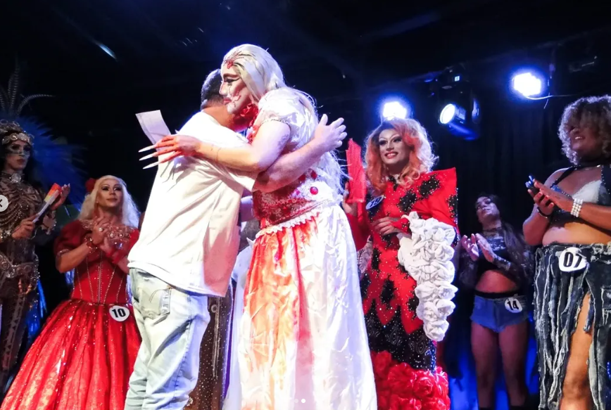
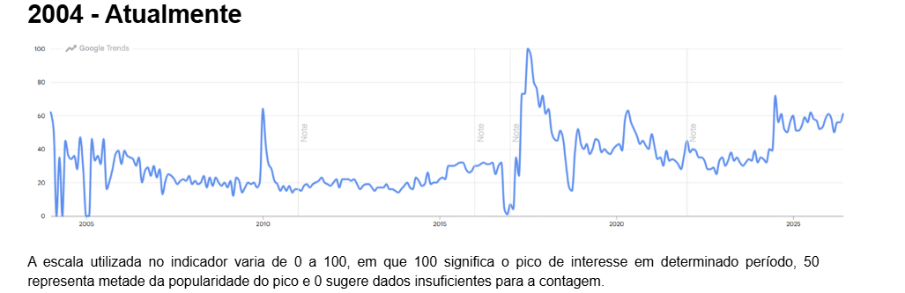
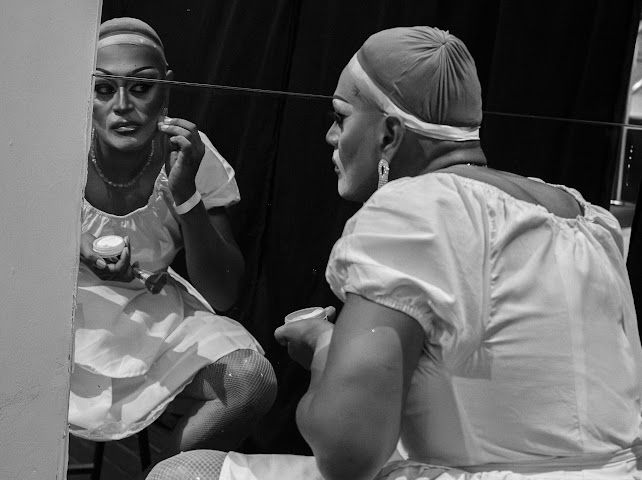

As rainhas da performance: a cultura Drag na Zona Oeste do Rio de Janeiro
Ao redor do mundo, em 28 de junho, é comemorado o dia do orgulho LGBTQIAPN+, uma data que representa a luta por direitos e igualdade para pessoas lésbicas, gays, bissexuais, transexuais e as demais identidades que a sigla engloba. Das ruas às campanhas publicitárias, a atenção da sociedade está voltada para a comunidade durante esse mês. Neste momento, o Brasil celebra um dos maiores eventos do mundo voltado ao movimento: a Parada do Orgulho LGBT+ de São Paulo. Neste ano, o ato político e cultural completa o seu 30º aniversário de representatividade e combate para a população queer, entretanto, apresentou uma queda significativa de patrocínios, atrações e movimentação econômica na capital paulista.
Declínio de Patrocínios Oficiais
202412 Marcas
20263 Marcas
Total de Perdas-9 Empresas
Marcas Resistentes em 2026: • Amstel — Patrocinadora Oficial
• Grupo L’Oréal — Copatrocinador
• Philip Morris Brasil — Apoiadora
De 2024 para 2026, o maior evento de orgulho queer do país sofreu um recuo severo no suporte institutional. A festividade viu se portfólio de investimentos drasticamente reduzido, caindo de 12 patrocinadores oficiais para apenas três empresas parceiras.
O impacto financeiro resultou na saída de 9 apoiadores de grande porte. A sobrevivência estrutural da marcha em 2026 passou a depender unicamente da verba direcionada pela Amstel (como patrocinadora oficial), pelo Grupo L’Oréal (atuando no copatrocinio) e pela Philip Morris Brasil (como apoiadora do projeto).
Os desafios enfrentados pela Parada do Orgulho de 2026 refletem a forma que o cenário nacional lida com as questões de sexualidade e identidade de gênero. Apesar do Brasil ser pioneiro na América Latina na garantia de direitos civis para a comunidade LGBT+, como o casamento homoafetivo e a criminalização da LGBTfobia, o país continua liderando o ranking mundial de mortes contra a população, segundo o relatório anual do Grupo Gay da Bahia.
Mesmo com os avanços conquistados pela comunidade nas últimas décadas, o acesso à proteção, cultura e espaços de convivência ainda é desigual no território brasileiro, especialmente em regiões afastadas dos grandes centros urbanos. É a partir dessa lacuna que surgem diversos tipos de manifestações artísticas nas periferias da cidade. O Doutor e Mestre em Comunicação pela Universidade Federal do Rio Grande do Sul (UFRGS) e especialista em estudos queer, Douglas Ostruca, diz que a arte nasceu para transformar as discriminações vividas pela comunidade.
“Recebemos ataques e violências a partir da hegemonia, e a arte, ela é um lugar que nos permite ressignificar essas violências, essas dores, transformar isso em arte, em potência, para poder dar uma resposta, e ao mesmo tempo para poder processar tudo isso que nos chega."
— Douglas Ostruca
Dentre as contraculturas advindas da luta LGBTQIA+, a arte drag ganhou seu espaço próprio. Misturando performance, moda, humor e crítica social, o movimento transforma o corpo em palco de expressão política e cultural. Em regiões periféricas, onde a presença de artes e o espaço é limitado, a drag vira sinônimo de construção de comunidade e pertencimento.
E é na Zona Oeste do Rio de Janeiro, região frequentemente isolada dos circuitos culturais e da vida noturna voltada à população LGBTQIA+ presente no centro da cidade, que a arte drag encontra espaço para florescer.
Créditos: Arquivo Pessoal/Alessandra Salazary
Créditos: Rita Martins
Créditos: Reprodução/Instagram
Créditos: Arquivo Pessoal/Alessandra Salazary
A arte drag abriga um leque de possibilidades que se desdobram em múltiplos jeitos de ser, desde drag queens, a drag kings e queers, os quais personificam os estereótipos femininos, masculinos e brincam com a androginia, respectivamente.
Em Campo Grande, bairro mais populoso do Brasil com cerca de 350 mil habitantes, performers usam de suas maquiagens e figurinos para ultrapassar as barreiras territoriais. Para uma drag queen da Zona Oeste, apresentar-se no Centro do Rio significa atravessar uma cidade inteira. Os cerca de 50 quilômetros que separam Campo Grande da região central ajudam a ilustrar por que tantos artistas locais defendem a criação de espaços culturais em seus próprios territórios. O bairro criou a sua própria cena LGBT+, com casas noturnas e eventos voltados à comunidade há pelo menos duas décadas. O Espaço Fênix, que foi uma das únicas boates LGBTQIAPN+ da região por quase 10 anos, é um desses poucos locais que funcionam como um ponto de encontro e reprodução de representatividade para a comunidade.
Raquel Carvalho, idealizadora da Casa Noturna, notou a ausência de espaços para LGBTs em Campo Grande em uma época de pouca visibilidade queer. Para ela, o espaço atuou como um lugar de liberdade para quem, muitas vezes, precisou esconder quem realmente era.
Além de representatividade, a boate funcionou como uma importante fomentadora de carreiras de drag queens locais, com descoberta de novos talentos, apresentações recorrentes, emprego como hostess e, principalmente, fonte significativa de renda para essas artistas. Raquel Carvalho explica que o espaço foi um local para as drags criarem um nome na cena.
Por motivos financeiros, a boate não funciona mais em um local fixo, mas continua a produzir eventos regulares para o público LGBT+. Esse espaço de resistência, assim como outros da Zona Oeste, transformou trajetórias de diversas drags, principalmente no aperfeiçoamento da arte e no processo de aceitação do gênero e da sexualidade. Alice Portilla, drag queen residente do Espaço Fênix, diz que a casa expandiu as oportunidades para a sua arte, entretanto a mantinha em sua zona de conforto.
Caio Sancha é quem dá vida a Alice desde 2013. O jovem descobriu no universo drag um espaço de expressão, a partir do amor que sentia por histórias de princesas e sereias.
Créditos: Reprodução/Instagram
Créditos: Reprodução/Instagram
Créditos: Reprodução/Instagram
Caio deu o nome “Alice” para a sua drag depois de se fantasiar como a personagem de mesmo nome do desenho “Alice no país das maravilhas”.
Mesmo após assumir a sua expressão artística, Caio sentiu na pele as dificuldades de ser artista em uma periferia onde as ações do poder público não chegam. — “É desgastante a gente sair daqui todo mês pro centro, levando um monte de aparato. Não tem como ir montada numa condução, é estranho, é difícil. Então, tem que pegar um Uber, e o cachê precisa pagar a minha ida e volta, né? Às vezes não paga, então é complicado. — explica ao falar sobre se transportar para outras zonas da cidade para expor a sua arte. O deslocamento dos artistas das periferias para as áreas mais nobres da cidade não é algo incomum, ele se dá, principalmente pela falta de verbas do Governo para fomentar a cultura nesses locais, e a consequência disso é a menor quantidade de espaços para produzir essas expressões. — É mais fácil de ser liberado a arte para a Zona Sul do que aqui na Zona Oeste. Não é por não ter lugar, nós temos espaços aqui, temos areninhas, teatros, escolas que podem ceder ginásios e praças públicas belíssimas. O que nós não temos é verba, o que nós não temos é dinheiro. — ressalta a artista trans e produtora cultural de Bangu, Alessandra Salazary.
Ela também destaca que, embora artistas drags busquem ampliar sua atuação e ocupar novos territórios, é fundamental que também existam espaços para a arte nas regiões onde vivem e produzem. — Eu quero ocupar outros espaços, mas eu gostaria que onde eu vivo tivessem locais que eu conseguisse levar a minha arte and mostrar o meu talento, da mesma forma que eu saio daqui, pego um ônibus e fico uma hora e vinte no trânsito para me apresentar no centro. — concluí. Esses espaços funcionam como pontos de acolhimento e expressão para artistas que encontram neles a oportunidade de compartilhar suas vivências e produções artísticas.
A realidade descrita por Alessandra é confirmada pelos números. Segundo a pesquisa Cultura das Capitais, moradores da Zona Oeste estão entre os que menos acessam atividades culturais no Rio de Janeiro. O estudo indica que bairros como Campo Grande, Guaratiba e Santa Cruz figuram entre as áreas da cidade com os menores índices de participação cultural, em contraste com regiões como Centro e Zona Sul.
Diante desse cenário, Alessandra identificou a necessidade de criar onde vive um espaço voltado à valorização da cena drag local. Foi assim que surgiu o Festival Drag ZO, o primeiro festival drag da região. A iniciativa reuniu 20 artistas da Zona Oeste e de outras periferias da cidade, que tiveram a oportunidade de apresentar seus trabalhos, trocar experiências e aprimorar suas performances por meio do contato com outros artistas.

Premiação de artistas no Festival DragZO. Créditos: Reprodução/Instagram
Décadas antes da criação do Festival Drag ZO ou das noites promovidas pela Fênix, comunidades LGBTQIAPN+ marginalizadas já transformavam a vida noturna em espaço de acolhimento e resistência. Essa realidade foi retratada no documentário Paris is Burning, que acompanha a cena dos bailes queers de Nova York, conhecidos como ballrooms, nos anos 1980. Assim como as "houses" exibidas no filme funcionavam como redes de apoio para pessoas expulsas de casa ou afastadas de seus círculos familiares devido a questões de gênero e sexualidade, espaços construídos por artistas da Zona Oeste também cumprem um papel de pertencimento e coletividade para a comunidade local. Douglas Ostruca diz que esse movimento e a expressão drag são pautadas no mesmo princípio: a coletividade. — Eles se organizavam como famílias, como grupos, como coletivos, para poder sobrevier, e para poder sobrevivem como uma pessoa LGBTQIAPN+, para poder expressar sua arte. — destaca.
Assim como em “Paris Is Burning”, as drag queens da Zona Oeste, que cresceram com a cena LGBT+ noturna e, ao mesmo tempo, ajudaram na construção desse movimento na periferia, conquistaram o seu espaço e fizeram essa região “queimar”. O movimento ballroom, drag e LGBT+, feito por pessoas historicamente excluídas, cria o seu próprio espaço de pertencimento e utilizam da arte como arma de combate à repressão.
Créditos: Reprodução/Instagram
Créditos: Reprodução/Instagram
A drag queen Hadassa, dupla de Alice Portilla em performances e antiga residente da Fênix, em uma apresentação sobre as discriminações vividas.
A história da arte drag se conecta com a cultura ballroom, mas suas origens remetem a períodos muito anteriores, como no teatro elisabetano inglês e na Grécia Antiga, no qual homens interpretavam papéis femininos, ou até mesmo na luta contra a escravidão, nos Estados Unidos, onde é encontrado o primeiro registro de uma pessoa a se autointitular uma drag queen.
Já no início do séc. XX termos como female impersonator, male impersonator e transformista passaram a designar artistas que performavam expressões de gênero distintas das suas. No Brasil, o transformismo ganhou espaço nos teatros de revista e casas de espetáculo ao longo desse período. De acordo com dados do Google Trends, ferramenta gratuita do Google que mostra o volume de pesquisas desde 2004, o termo “drag queen” no Brasil possui 3 grandes momentos: dezembro de 2009, junho a julho de 2017 e abril a maio de 2020.

Esses momentos de busca por esse termo no Brasil revelam a caminhada da ascensão da expressão artística no país. Em tradução livre, as rainhas da performance, chamadas drag queens, invadiram a cena brasileira e começaram a aparecer em todos os lugares, desde bares e casas de shows até em programas de televisão, como o Drag Race Brasil e a Corrida das Blogueiras.
“Você bota uma drag queen, tipo a Gloria Groove, cantando pagode e invadindo um espaço que era hétero, praticamente sem nenhum LGBT. Isso não aconteceria muitos anos atrás. Então a gente vê essa invasão drag, essa invasão de cor. ”
— Caio Sancha
Entretanto, o boom do universo drag não é sinônimo de maior aceitação, principalmente quando essa arte ultrapassa os conceitos binários de gênero. Para a drag queen Hadassa, mesmo artistas que alcançam grande visibilidade ainda enfrentam barreiras impostas por padrões sociais de gênero. — Mesmo que a gente tenha artistas muito famosos por ser drag, eles ainda assim só conseguem ser mais aceitos quando apresentam uma estética que passe mais pela feminilidade e que acabe indo mais pelo o que as pessoas conseguem normalizar — afirma.
A cultura Drag é uma manifestação artística com montagens e performances elaboradas em que pessoas, independente da orientação sexual, criam uma persona para si próprios e passam a interagir com a arte através dela. Douglas Ostruca é de Porto Alegre e dá vida à dragLuná Maldita, ele trata dessa arte como um leque de possibilidades que se desdobram em múltiplos jeitos de ser, drag queens, a drag kings e queers – A arte drag é heterogênea, múltipla, que tem um potencial gigante de se multiplicar e se criar em diferentes plataformas. E nisso a gente também tem outra perspectiva sobre a drag como uma estética de si, como uma experimentação de si, como produção de subjetividade, que seria uma perspectiva micropolítica. – explica.
Mas ser drag queen vai além da maquiagem, dos figurinos extravagantes e das performances nos palcos: a arte drag carrega dimensões políticas e sociais que utilizam o humor, a sátira e a provocação para questionar padrões de gênero e estereótipos reproduzidos na sociedade. Para muitos, ela representa um lugar de identificação e resistência para a comunidade LGBTQIAPN+. — A cultura drag, para mim, significa liberdade, sabe? É libertar tudo que a gente traz preso dentro da gente. Eu sempre fui reprimido pelos meus cai para não fazer certas coisas, agora eu faço com a minha drag. – Expõe Fabrício Muller, que dá vida a dragHadassa desde 2022 e usa de sua personagem para ser quem realmente é. — A drag me permite chegar a lugares que eu gostaria de ter chegado, de fato, enquanto Fabrício - ressalta.

O universo drag é um campo de luta, de fonte de renda, de identidade, crítica social e política. Créditos: Juliana Bizzo
Em Born This Way , música lançada por Lady Gaga em 2011 e considerada até hoje um dos maiores hinos LGBTQIA+, a cantora norte-americana dá o seu recado em apoio à comunidade no verso “Don’t be a drag, just be a queen”. Em um jogo de palavras, Gaga contrapõe o termo drag, que pode assumir sentidos negativos no inglês, como algo desagradável ou desanimador, à figura da queen, associada à autoestima, ao orgulho e à autenticidade. A música, que reforça a existência queer no próprio título, incentiva as pessoas a abandonarem as inseguranças e a assumir sua autenticidade e brilhar como uma "rainha".
Na Zona Oeste do Rio, artistas drags transformam esse incentivo em prática cotidiana. Em meio à escassez de espaços culturais, à necessidade de deslocamento e aos desafios para permanecer na cena artística, iniciativas como a Fênix e o Festival Drag ZO expõe que a paixão pela arte drag é tão grande que as artistas buscam remanejar recursos e criar alternativas para que ela continue existindo. Ao criar espaços de encontro, formação e trabalho, elas constroem caminhos para que novas gerações possam ocupar os palcos sem precisar abandonar seus territórios. A arte drag se afirma como uma ferramenta de expressão, resistência e transformação social em uma região frequentemente afastada dos grandes circuitos culturais da cidade, mostrando que ser drag também é reivindicar espaço, visibilidade e pertencimento.